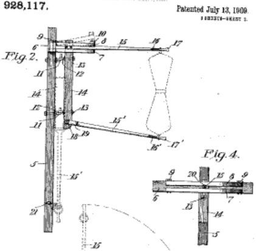

{
"published": true,
"layout": "post",
"title": "The Spreadsheet View",
"date": "2016-09-27 13:05:00 -0400",
"tags": "digital collections, burying the lead, views"
}So I've been watching the EXCELLENT Collections as Data 2016 conference live stream all morning, and it's really got the wheels going.
And the wheels were already going. A few weeks ago -- when I finish corraling my thoughts, perhaps I can link to here -- I attended a workshop in Maryland about Image Processing and Reunification.
These events, and the natural and mysterious evolution of ideas, have conspired to really hit home the idea of Collections as Data.
Doesn't stop there. Thomas Padilla, a former nearby colleague of MSU and now in California I believe, also shared an IMLS grant just yesterday they had funded, "Collections as Data: Conditions of Possibility".
I'm also serving on a committee about academic, R1 library collections.
And there's no end in sight.
So, collections as data? What does that mean?
We do our best here in the Digital Publishing and with our Digital Collections to push the envelope of preservation and access, challenging ourselves to align digital objects in ways that will send them flying into the masses outstretch arms like mailbags on passing trains.

If I'm going to bury the lead, might as well throw one more blanket on the pile. I've also been working on a connector between the python ORM Peewee and DataTables for another project (which I hope to share at some point). As such, the scary efficient and well-understood mecahnics of a searchable, server-side processing spreadsheet has been on the brain.
So here's the lead:
You get it all. Thumbnails. Titles. Descriptions. Metadata. Filtering. Sorting. Speed. Search results already as structured data. Finesse. Fireworks.
Onwards and upwards! Putting the feelers out for a Solr-DataTables, python based connector, and we're hoping to wire up just such an interface soon for our front-end.